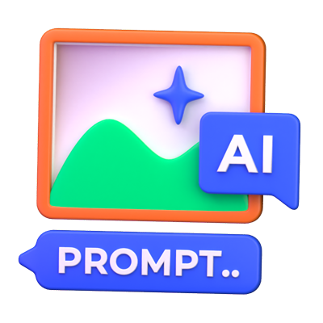

- Dicas para criar prompts mais eficientes
Quanto mais detalhes você fornecer, melhor o resultado será. Em vez de dizer "ajude com CSS", por exemplo, diga "como centralizar um container no meio da página usando CSS?"
👉 Se o prompt envolver algo que você já fez, inclua informações relevantes. Por exemplo: "Eu já ajustei o z-index, mas agora preciso de ajuda para ajustar a rolagem dentro do container."
👉 Sempre que possível, forneça trechos de código ou exemplos de como o problema está se manifestando. Isso ajuda a fornecer soluções mais direcionadas.
- Formule perguntas claras:
👉 Ao invés de fazer perguntas muito abertas, tente focar em problemas ou desafios específicos. Perguntas como "Como posso melhorar o desempenho de rolagem na minha página?" funcionam bem.
- Explique o que já tentou:
👉 Se você já tentou algumas soluções, mas elas não funcionaram, diga o que deu errado. Isso ajuda a evitar sugestões que você já testou e pode oferecer novas alternativas.
Explore o poder dos prompts de IA em diferentes tipos de conteúdo com nosso guia detalhado. De artigo de blog a copy de e-mail marketing e roteiro de vídeo, veja dicas para redigir prompts eficazes e aproveitar ao máximo a inteligência artificial na sua rotina.
Você sabia que 7 em cada 10 profissionais de marketing já utilizam Inteligência Artificial (IA) para personalizar as suas estratégias? Como consequência, segundo dados do 2024 State of Marketing Report da HubSpot em parceria com Litmus, Rock Content e Search Engine Journal, são mais de duas horas por dia em economia de tempo que são usadas em outras tarefas mais estratégicas. E é por isso que os prompts são tão importantes.
Sim, se fala muito em IA, ChatGPT, Gemini e outras tantas soluções, mas, para os profissionais de marketing, o sucesso com o uso dessa tecnologia passa diretamente pela forma como você faz um pedido ou direcionamento para as ferramentas de IA, ou seja, o famoso prompt.
O que acha, então, de tirar as suas dúvidas sobre o assunto com nosso guia de prompts de Inteligência Artificial para produção de conteúdo? Continue a leitura!
- Quais são os tipos de prompt?
- Prompts para produção de conteúdo:
- Qual é a importância do olhar humano na produção de conteúdo?
O termo “prompt” se torna cada vez mais popular porque desempenha um papel crucial no universo do marketing e da criação de conteúdo: funcionando como uma instrução ou estímulo que direciona e influencia o processo criativo de sistemas baseados em inteligência artificial (IA).
Segundo a definição da Microsoft, um prompt é essencialmente: “um comando ou um conjunto de instruções que orienta a geração de respostas ou conteúdos específicos por parte de sistemas baseados em inteligência artificial (IA)”.
Ele garante que o conteúdo gerado esteja alinhado com os objetivos de marketing de uma marca ou empresa.
Por exemplo, um prompt pode direcionar um sistema de IA para desenvolver um post de blog que aborde as tendências de consumo sustentável, especificando o tom, o estilo e os pontos-chave a serem abordados — incluindo termos que podem ou não ser utilizados, termos proibidos e demais indicações do gênero.
Esse comando inicial é fundamental para que o conteúdo produzido seja relevante e eficaz na comunicação com o público-alvo.
Para quem quer utilizar a IA no seu dia a dia, é importante entender também os benefícios dos prompts.
Os prompts agilizam o processo de criação de conteúdo ao fornecer um direcionamento claro desde o início, essas instruções diminuem a necessidade de múltiplas revisões e ajustes.
Na prática, isso permite que o conteúdo seja produzido de maneira mais rápida, reduzindo o ciclo de produção e permitindo que o foco em outras tarefas críticas.
- Superação do bloqueio de escritor
Outro benefício dos prompts é que eles ajudam a resolver o bloqueio de escritor, um desafio comum. Como isso funciona? Ao oferecer um ponto de partida, eles eliminam o intimidante “papel em branco”, o que pode ser muito útil em cenários de alta pressão, nos quais a produção constante de conteúdo é necessária.
- Garantia de alinhamento com objetivos específicos
Por fim, os prompts garantem que todo o conteúdo produzido esteja alinhado com os objetivos estratégicos da empresa. Ao utilizar prompts que incorporam palavras-chave e temas específicos, você garante que o conteúdo não só faça sentido para o público-alvo, mas também ajude a seguir as metas de SEO e branding.
- Quais são os tipos de prompt?
Mas também é importante entender quais são os diferentes tipos de prompt, que vão impactar diretamente no resultado final.
Prompts na forma de perguntas abertas são projetadas para estimular o pensamento crítico e a exploração de ideias. Eles não limitam as respostas a uma simples afirmação ou negação, permitindo uma resposta mais elaborada e profunda, como esses exemplos:
“O que você acha que é o maior desafio na criação de conteúdo hoje em dia?”
“Como você descreveria sua experiência com inteligência artificial?”
Esses tipos de perguntas são úteis para gerar discussões em redes sociais, entrevistas com especialistas ou em pesquisas de mercado, contextos nos quais a profundidade da resposta é mais valiosa do que a resposta em si.
Ao contrário das perguntas abertas, as perguntas fechadas focam em obter respostas específicas e diretas, geralmente limitadas a “sim” ou “não”. Elas são eficazes para coletar dados concretos e realizar análises quantitativas, como:
“Você já usou alguma ferramenta de IA para criar conteúdo?”
“Você prefere trabalhar em equipe ou individualmente?”
Esses prompts são particularmente úteis em questionários. Aqui, respostas rápidas e fáceis de analisar são necessárias para orientar decisões estratégicas.
Prompts formulados como comandos ou instruções servem para direcionar ações específicas. Eles são claros e concisos, deixando pouco espaço para interpretações, ajudando a construir um texto, por exemplo:
“Liste três benefícios do marketing de conteúdo”
“Descreva o processo de humanização do conteúdo gerado por IA”
Esses prompts são extremamente úteis em ambientes educacionais, pois, aqui, informações precisas e diretas são fundamentais. Ou seja, o marketing de conteúdo pode se beneficiar diretamente desse tipo de comando.
Já os prompts criativos são projetados para incentivar a inovação e a originalidade da ferramenta de IA. Na prática, eles desafiam o software a pensar fora da caixa e a explorar cenários hipotéticos ou criar narrativas envolventes:
“Imagine um futuro onde a IA é responsável por toda a criação de conteúdo. Como seria?”
“Crie um título atraente para um artigo sobre as tendências do marketing de conteúdo em 2024.”
Especialmente em campanhas de marketing e publicidade, casos em que a diferenciação criativa pode determinar o sucesso de um produto ou serviço no mercado, esse tipo de comando pode ajudar bastante.
Prompts para produção de conteúdo: como utilizar em ferramentas de inteligência artificial?
Às vezes, estamos com tantas tarefas para fazer, que acabamos nos sentindo muito pressionados na hora de criar vários conteúdos em um curto espaço de tempo. Para profissionais freelancers, por exemplo, que às vezes possuem diversos clientes, ter uma ajudinha pode ser o melhor caminho para ter uma maior produtividade e entregar seus trabalhos com qualidade.
Na hora de criar conteúdos e ir buscar apoio, seja com o ChatGPT ou outra ferramenta de IA – ou qualquer outra ferramenta sem IA, podemos utilizar prompts que irão adiantar e muito o trabalho. Aqui na Rock Content mesmo, por exemplo, temos alguns prompts que fomos testando até encontrar a melhor maneira de utilizá-los.
- Prompts para criação de Conteúdo Briefing:
Faça um briefing para um conteúdo com o título [Insira o título do post] com a keyword principal [kw principal] e [kw secundária].
Que tópicos podem ser abordados em um artigo com título “Insira o título do post” com a keyword principal [kw principal] e [kw secundária].
Crie um briefing completo para a criação de um conteúdo otimizado para os mecanismos de busca que entregue uma boa experiência para os usuários, com a keyword principal sendo [kw principal], o título [Insira o título do post]. O objetivo do artigo é [insira o objetivo do artigo. O que sua marca tem como intenção ao fazer esse artigo?]. A audiência desse artigo são [pessoas interessadas em assunto x] e suas buscas também podem ser sobre [insira palavras-chave secundárias].

Escreva um artigo sobre [tópico principal], com a palavra-chave principal sendo [kw principal]. Fale sobre [pontos que não podem estar de fora do texto]. O texto deve ter linguagem clara e [informal, formal? Diga como o texto deve ser comunicado]. O conteúdo deve ter no mínimo [x] caracteres.
Faça um resumo sobre o texto abaixo, falando sobre os pontos principais de maneira clara e objetiva. O resumo será inserido abaixo do título de um artigo, e, por isso, deve ser curto: [inserir texto do artigo]
Quero [X] sugestões de palavras-chave que falem sobre [tópico]
Gere uma lista de [x] palavras-chave sobre [tópico]. Ordene essas palavras-chave em etapas de funil de vendas, com palavras-chave no topo do funil, meio do funil e fundo do funil.
Crie uma lista de palavras-chave de indexação semântica latente que se relacionem sobre [tópico].
Separe tópicos por intenção de buscas (transacional, informacional, navegacional e comercial) [indicar os tópicos]
.jpg)